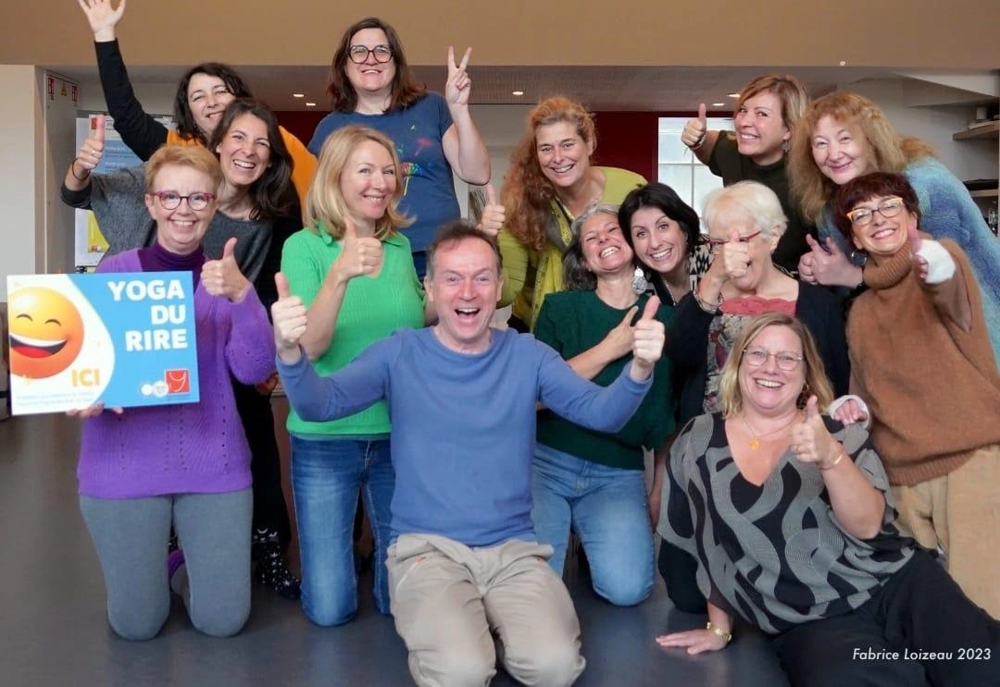

Pratiquez le rire comme un exercice bienfaisant. Boostez votre santé, votre moral et votre confiance. Séances à La Roche sur Foron et ateliers en Haute-Savoie.
Le yoga du rire agit sur le corps, l'esprit et les émotions. Dès les premières séances, des effets positifs se font sentir.
Le rire stimule le système cardio-vasculaire, améliore l'oxygénation du sang, renforce l'immunité et favorise un meilleur sommeil.
Le rire détruit simultanément le stress physique, mental et émotionnel. Il favorise le lâcher-prise et l'optimisme au quotidien.
Pratiquer en groupe facilite la communication, renforce la confiance en soi et crée des connexions authentiques et joyeuses.
Une structure simple, accessible à tous, quel que soit l'âge ou la condition physique.
Un éveil du corps avec des mouvements très simples et des respirations pour se préparer en douceur à rire
D'abord "forcé", le rire devient vite contagieux et authentique au fil des jeux.
Allongé ou assis, les rires éclatent spontanément puis place à la détente profonde.
Partage d'expérience entre participants dans une ambiance bienveillante.

La meilleure façon de comprendre, c'est de vivre l'expérience. Offrez-vous une séance de rire sans engagement.
Réserver ma première séance